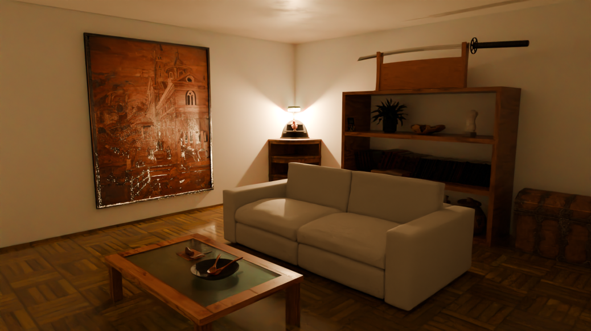
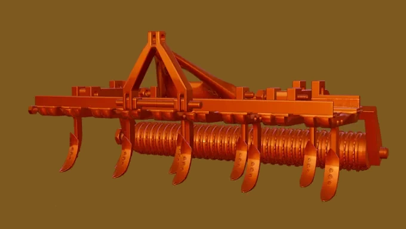
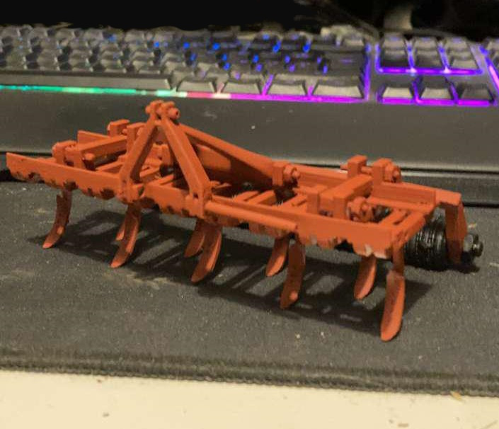
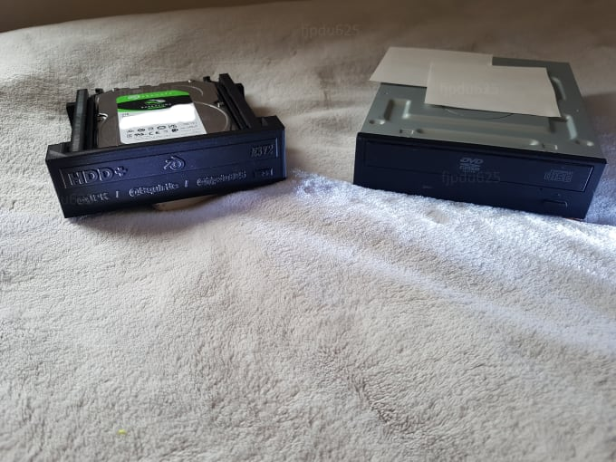
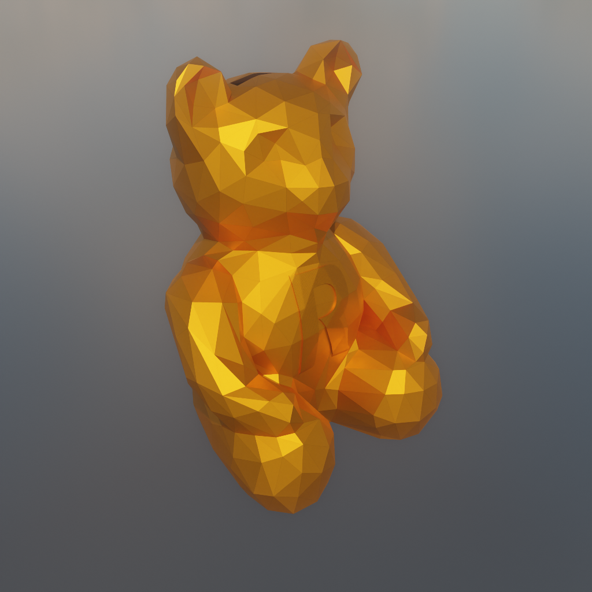
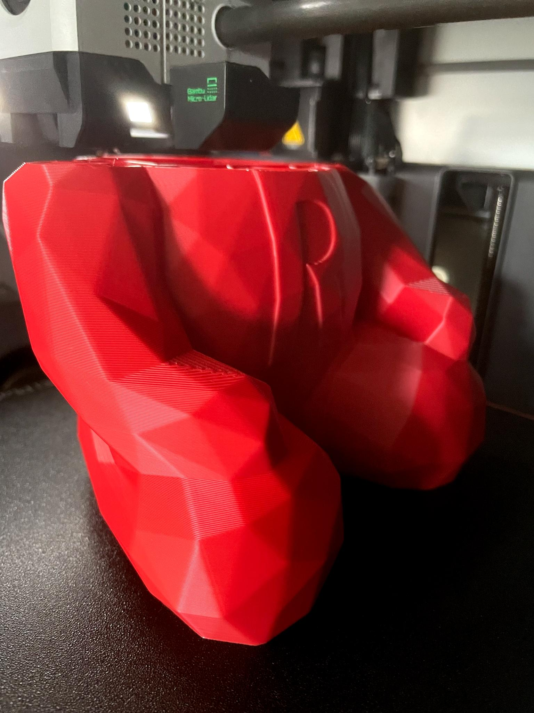
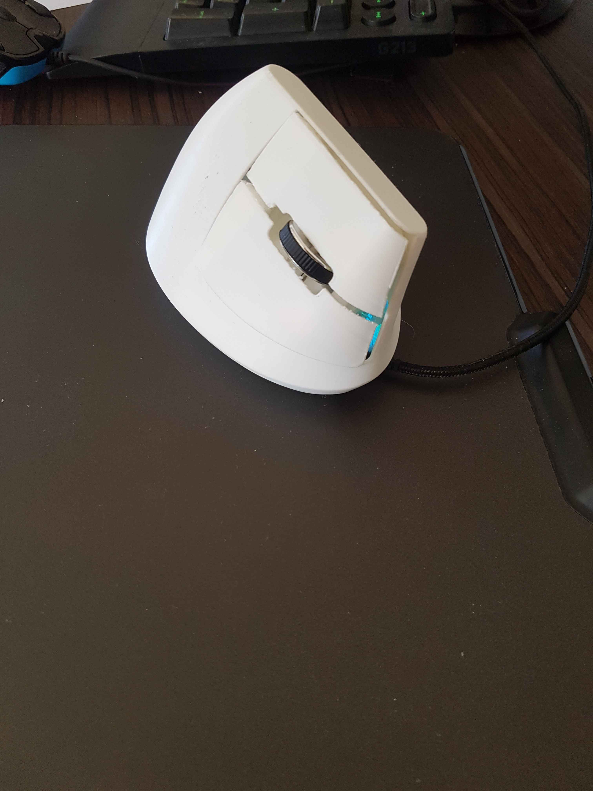
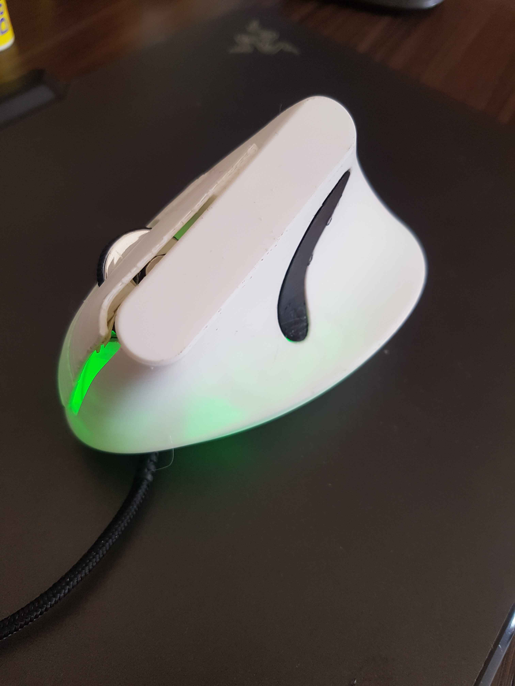

- Projets personnels
-
Bonjour et bienvenue sur mon portfolio.
Ci-dessous, vous trouverez quelques créations que j'ai réalisées en 3D via l'application . - Salon réalisé à partir d'anciens et nouveaux modèles modélisés exprès, avec l'ajout de quelques références. 
- Porte Torii
- Essai de reproduction d'une BETA Track 50 RR
- Modélisation et impression d'un cultivateur agricole pour miniature 1/16.  
- Modélisation et impression d'une souris verticale
- avec 3 boutons supplémentaires
- Adaptateur HDD de taille lecteur DVD avec rack coulissant pour HDD 
- Modélisation d'une tirelire cochon sans supports pour un client
- Modélisation d'une tirelire ourson sans supports pour le même client  
- Projets professionels
Click

